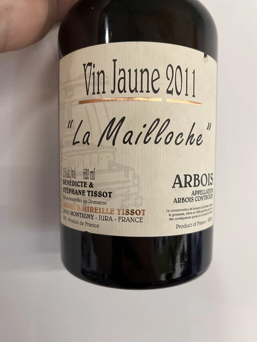
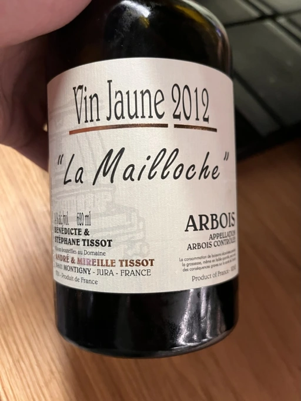
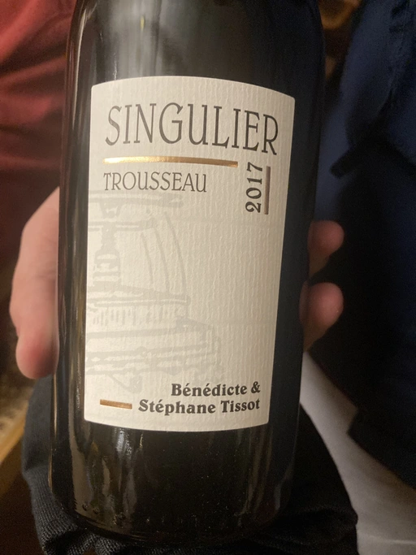

- Type
- White Still, Dry
- Producer
- Andre et Mireille Tissot
- Vintage
- 2012
- Location
- France, Arbois AOC
- Grapes
- Savagnin
- Alcohol
- 15
- Sugar
- NA
- Price
- 3030 UAH
- Cellar
- N/A
Ratings
2021-12-08 - 8.50
Wonderful Savagnin that spent quite amount of time under flor. Intense Jerez-like bouquet with notes of apple, nuts, mould, mushrooms and tilia honey. Multilayered, fresh and with persistent aftertaste.
Tasted on an event organised by Vasyl Kalinichenko.
Related

Andre et Mireille Tissot
La Mailloche Vin Jaune - 2011

Andre et Mireille Tissot
Pinot Noir Sous la Tour - 2017

Andre et Mireille Tissot
La Mailloche Vin Jaune - 2012

Andre et Mireille Tissot
Singulier Trousseau - 2017

Sextant
Maranges 1er Cru Les Clos Roussots - 2019

Storm
Vrede Pinot Noir - 2017

Colin-Morey Pierre-Yves
Saint-Aubin Le Banc - 2019

Domaine Derain
Saint-Aubin - 2018

Domaine Michel Gaunoux
Beaune - 2017